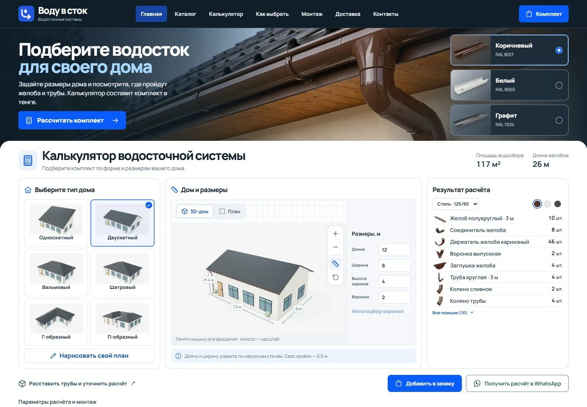
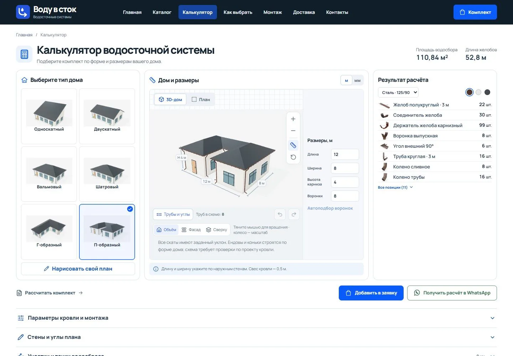
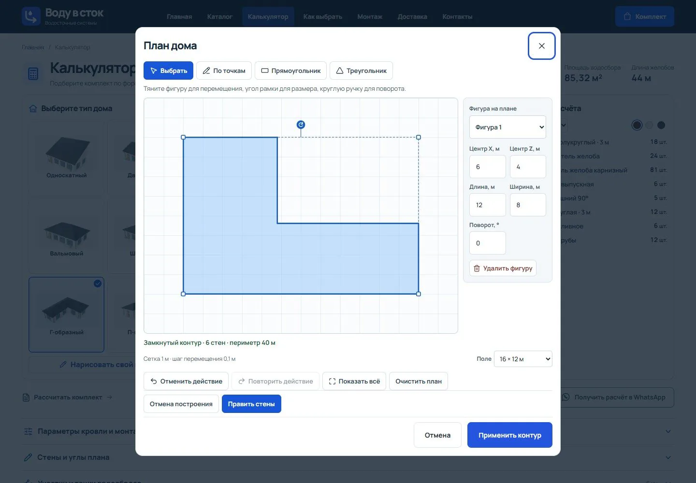

Магазин с 3D-калькулятором
Воду в сток
Водостоки под размеры дома: 3D-схема, комплект и расчёт.

Главная: выбор цвета системы и калькулятор на первом экране. Цены и телефон скрыты
О проекте
Сайт-магазин водосточных систем VEGASTOK и POLIVENT. Посетитель выбирает форму дома или рисует свой план, видит в 3D, где пройдут желоба и трубы, и получает совместимый комплект. Расчёт можно сохранить в PDF или CSV и отправить менеджеру в WhatsApp.
Что внутри
- 3D-калькулятор с шестью типами крыш
- Свой план дома по точкам или из фигур
- Каталог из 34 позиций с выбором цвета
- Экспорт расчёта и заявка в WhatsApp
Экраны проекта



